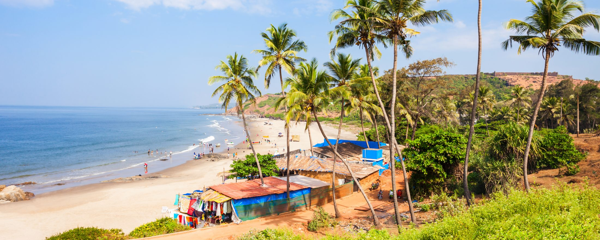

GOD’S OWN COUNTRY
KERALA
A Journey to the Spice Garden of India! A Rendezvous with Mother Nature's Untouched Beauty,
a Tryst with the Mighty Arabian Sea & the Magical Backwaters!

THE MAGICAL BACKWATERS
KERALA
Unravel the Mesmerising Beauty of the Silent Backwaters with a Houseboat Cruise!
Check-In into the “Kettuvallams” For a Fun-Filled and Memorable Holiday in Kerala!

STUNNING BEACHES AND RUSTIC CULTURES
KERALA
Experience the Grandeurs of Kerala! Visit the Spectacular Beaches in Kerala;
Revel in the True Essence of Beach Culture & Traditions while in God’s Own Country!